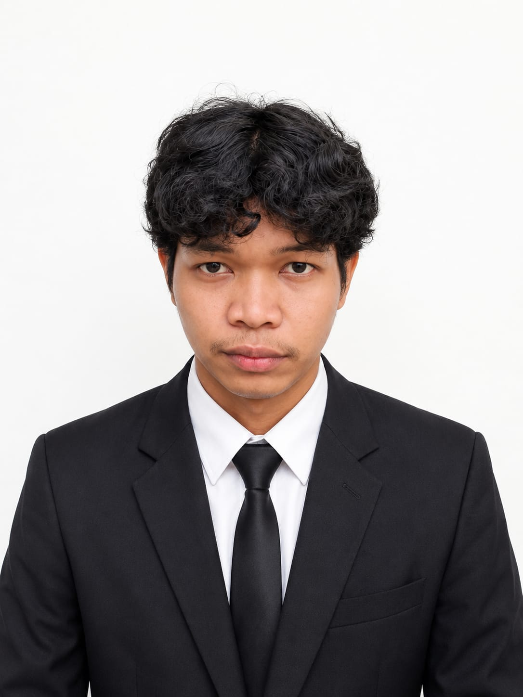

SMAN 01 SUKAMAKMUR (SMK / SMA)
IPS
Saya membuat website dengan HTML, CSS, PHP, dan MySQL. Proyek terbaru saya adalah Vehicle Care, website pengingat servis kendaraan.
Lihat proyek Hubungi saya
Saya Muhamad Nasir Mustopa, lulusan SMAN 01 Sukamakmur Sekolah dari Bogor. Saya suka membangun website yang rapi, mudah dipakai, dan menyelesaikan masalah nyata, seperti mengingatkan jadwal servis kendaraan.
Saat ini saya terus belajar pemrograman web, dari tampilan dengan HTML dan CSS sampai pengolahan data dengan PHP dan MySQL.
Badar Army, Saya bekerja di bidang produksi roti,mulai dari menyiapkan bahan baku,mengolah adonan,membentuk roti,proses fermentasi,memanggang menggunakan oven,hingga pendinginan dan pengemasan. Saya terbiasa bekerja sama dalam tim dan menjaga kualitas produk.
IPS
Website servis kendaraan untuk motor dan mobil. Pengguna diingatkan kapan harus servis berdasarkan angka speedometer atau tanggal servis terakhir.
Ada pertanyaan atau ingin bekerja sama? Pilih cara yang paling nyaman buat kamu.